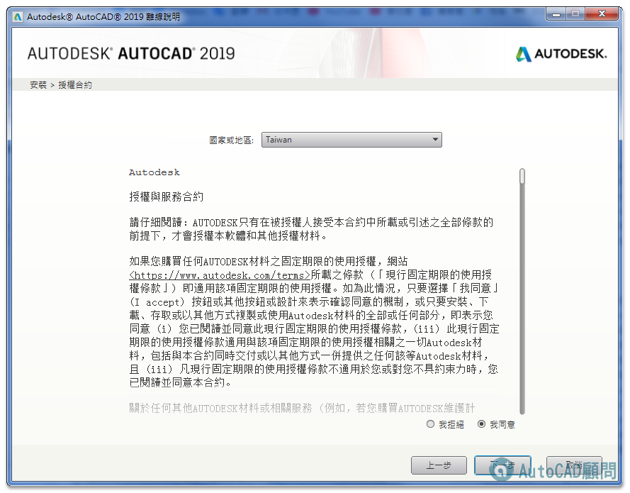
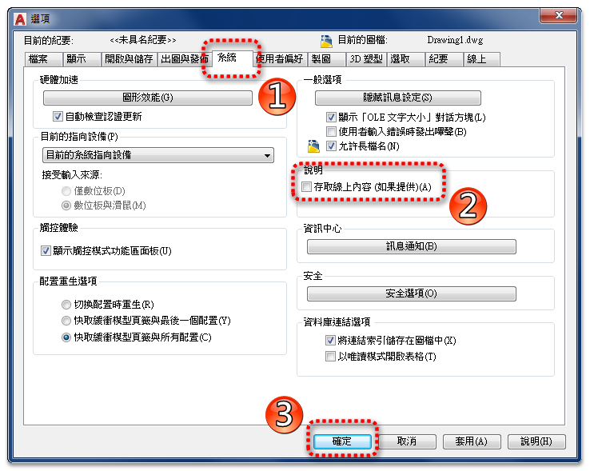

現在F1說明文件都改為線上查詢，但是若沒有網路就無法查訊F1...
步驟1.可以選擇下載安裝到自己的電腦，日後查詢就不用靠網路囉～





步驟2.再將「存取線上內容」打勾取消即可。

▼[下載]安裝 AutoCAD 2024 F1說明（本機）
https://www.autodesk.com.cn/support/technical/article/caas/tsarticles/tsarticles/CHS/ts/7sGfjNap7ON7TYNtBX5ZZl.html
▼[下載]安裝 AutoCAD 2023 F1說明（本機）
https://knowledge.autodesk.com/support/autocad/downloads/caas/downloads/content/download-install-autocad-2023-product-help.html
▼[下載]安裝 AutoCAD 2022 F1說明（本機）
https://knowledge.autodesk.com/support/autocad/downloads/caas/downloads/content/download-install-autocad-2022-product-help.html
▼[下載]安裝AutoCAD 2021 F1說明（本機）
https://knowledge.autodesk.com/support/autocad/downloads/caas/downloads/content/download-install-autocad-2021-product-help.html
▼[下載]安裝AutoCAD 2020 F1說明（本機）
https://knowledge.autodesk.com/support/autocad/downloads/caas/downloads/content/download-install-autocad-2020-product-help.html
▼[下載]安裝AutoCAD 2019 F1說明（本機）
https://knowledge.autodesk.com/support/autocad/downloads/caas/downloads/content/download-install-autocad-2019-product-help.html
▼[下載]安裝AutoCAD 2018 F1說明（本機）
https://knowledge.autodesk.com/support/autocad/downloads/caas/downloads/content/download-install-autocad-2018-product-help.html
▼[下載]安裝AutoCAD 2017 F1說明（本機）
https://knowledge.autodesk.com/support/autocad/downloads/caas/downloads/content/download-install-autocad-2017-product-help.html
▼[下載]安裝AutoCAD 2016 F1說明（本機）
https://knowledge.autodesk.com/support/autocad/downloads/caas/downloads/content/download-install-autocad-2016-product-help.html
▼[下載]安裝AutoCAD 2015 F1說明（本機）
https://knowledge.autodesk.com/support/autocad/downloads/caas/downloads/content/download-install-autocad-2015-product-help.html
▼[下載]安裝AutoCAD 2014 F1說明（本機）
https://knowledge.autodesk.com/support/autocad/downloads/caas/downloads/content/download-install-autocad-2014-product-help.html
▼[下載]安裝AutoCAD 2013 F1說明（本機）
https://knowledge.autodesk.com/support/autocad/downloads/caas/downloads/content/download-install-autocad-2013-product-help.html